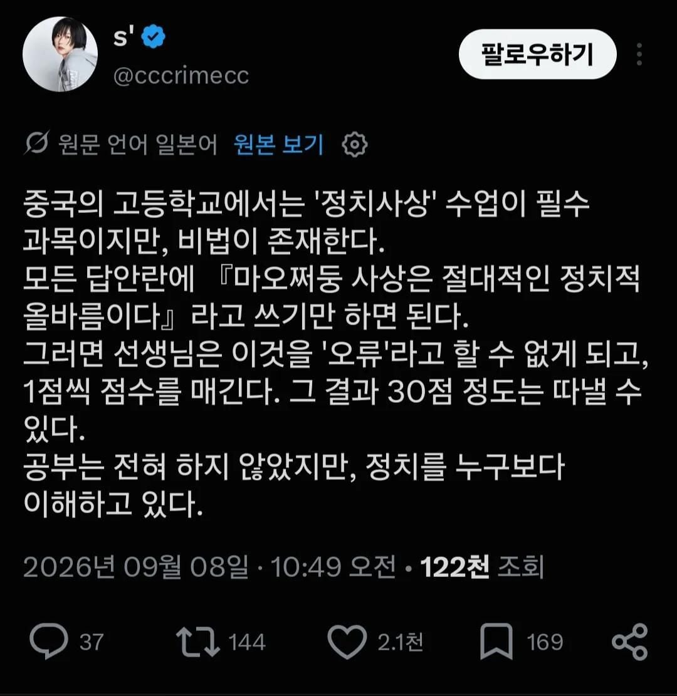

중국 정치사상 수업에서 최소한 30점은 받는 방법
댓글
객관식이건 주관식이건 답란에 저렇게 쓰면 됨.. ㅋㅋㅋㅋ
OMR 카드라도 저렇게 써도 될걸?
와우
틀렸다 하면 공안행 ㅎㄷㄷ
정치질을 잘 가르치고 있구만 ㅋㅋㅋ
오히려 마오쩌둥 사상은 공산주의라서 요즘은 저렇게 강성하게 하면 안좋게보지않냐 ㅋㅋ
중국같은 극자본주의국가에서 어딜!
시진핑 사상이라고 하던가
너 뭐해
시진핑 개새끼
좋게 봤을 때는 100점이었을텐데
이젠 안 좋게 봐서 30점밖에 못 받을 듯
마오쩌둥은 정치적으로는 병신짓많이했지만
정복군주로는 미친놈인듯 북부 아프가니스탄급 동굴속에서
지역군벌들 통합해서 제갈량도 못한 천하통일 이뤄낸거긴 하니
중세 이전에 태어났으면 제법 높은 평가받는 인물이었을텐데
럭키 장각
지금 시진핑 집안이 마오쩌둥 홍위병 시절 박해를 받건 집안이라 마오 사상 개싫어 할껄?
홍위병에게 집뺐기고...
시진핑의 여자형제는 공산당 최고위간부인 아버지가 보는 앞에서 강간당함. 그뒤 자살.
홍위병에게 원한맺힌 등소평이라서 천안문 시위 밀었다는 설도 있음.
등소평아들은 평생 척추불구됨.
응? 핑핑이 누나가 아버지 앞에서 당했다는 첨듣는 소린데?
마오사상은 걍 공산당 1당독재를 정당화하기위한 기본사상으로 해놨음.
마오사상 비판하면 뭐된다고 알고있음
원래 마오주의는 중국에서 금기시 되는 사상 아니였음? 다시 부활 함?
마오주의와 마오쩌둥사상을 구분하고 있음
요즘엔 마오한테 뭐라해도 크게 불이익 없다고 하던데.
오히려 시진핑을 까면 그게 치명적이라고 하더만.
시진핑 아버진가? 걔가 마오쩌둥이랑 정치적 대립관계라서 마오쩌둥 때 시골로 쫓겨 내려간게 시진핑네 가족이던데
ㅇㅇ 문화대혁명때 시진핑 일가도 존나게 고생함
문혁 같은 건 실책으로 여겨서 아니라던데
틀린걸 틀렸다고 할 수 없는
이미지 속 주장은 **사실이 아닌 풍자성 인터넷 유머(밈)**입니다.
분석 기준 및 구체적 근거는 다음과 같습니다.
시험 채점 기준 불일치
중국의 고등학교 정치 과목(思想政治) 평가 및 대학 입시(가오카오) 채점 기준은 매우 구체적이고 정밀합니다. 문제에서 요구하는 구체적인 개념, 논리적 연결, 법률/경제/정치 이론 용어를 기술하지 않고 "마오쩌둥 사상은 절대적인 정치적 올바름이다"라는 식의 동일한 문장만 반복 작성할 경우, 출제 의도와 부합하지 않는 **무관한 답변(Off-topic)**으로 처리되어 점수를 받을 수 없습니다.
개념적 오류
중국의 현행 정치 교육 과정 및 공식 이념체계는 '마오쩌둥 사상' 단독이 아닌 '중국특색사회주의 이론체계(덩샤오핑 이론, 3개 대표론, 과학적 발전관, 시진핑 신시대 중국특색사회주의 사상 등)'를 포함합니다. 특정 단어를 무조건 정답으로 인정하여 기계적으로 점수를 부여하는 채점 제도는 존재하지 않습니다.
게시물의 성격
해당 트윗 내용은 중국의 이념 교육과 정치적 분위기를 희화화하기 위해 작성된 풍자성 픽션(인터넷 유머)에 불과합니다.
점수가 높고 낮고를 떠나서 저러면 쪼인트 까이지 수업 제대로 듣지도 않고 감상문도 제대로 안 낼텐데. 오히려 태만으로 가정에 통보간다. 그리고, 정치사상 관련 수업들은 대학교 가서도 군사훈련 포함해서 꾸준히 들을건데 저 때부터 찍히면 답이 없음
마오쩌뚱 찬양했는데 쪼인트까였다고 교수를 공안에게 신고해버리면 되지 않을까?
사회주의 핵심가치관 12가지를 쓰시오 했는데 마오쩌둥 이야기 나오면, 잘못하면 비꼬는 걸로 보일 수 있다고 봄
공식적으로 공칠과삼이라니까 70점 줘야 하는거 아니냐
원문이 일본어네 뭔가 한국에서 살아본 적 없는 조선족이 일본 가서 한국 욕하는 거랑 비슷한 느낌 아니냐
중국 지식인 정도 되면 공산당에 뭔가 연결점이 있지 않는 이상 저건 걍 개소리임
그들도 저게 얼마나 허황된건지 알거든
주관식없애고 객관식으로 내면 되겠네